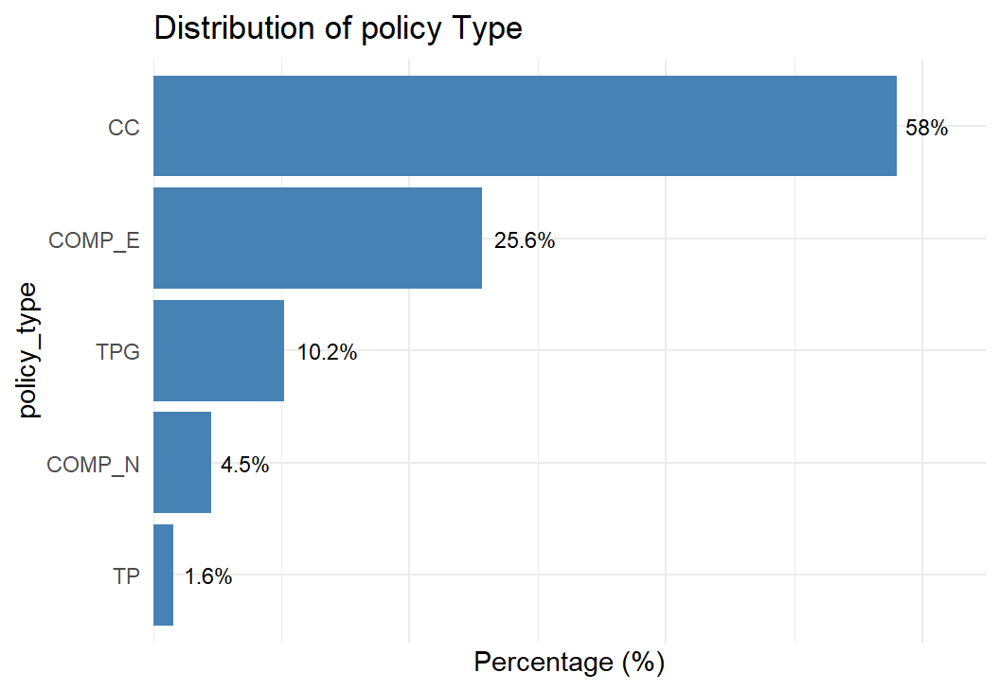
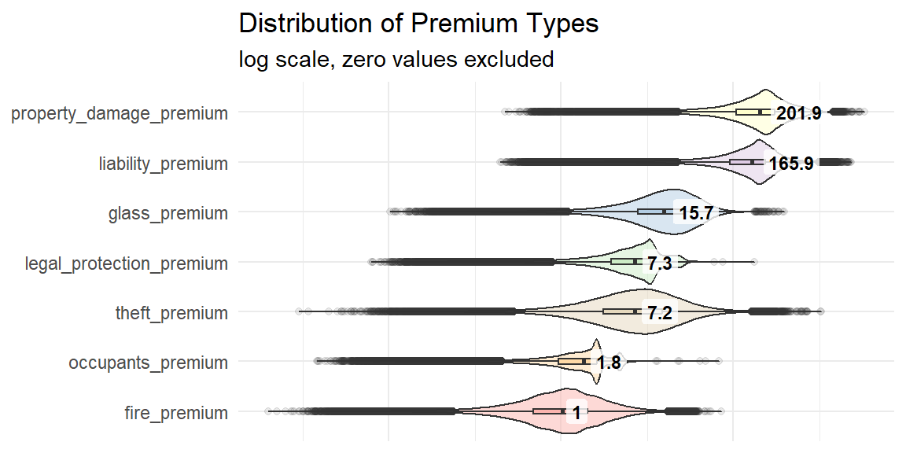
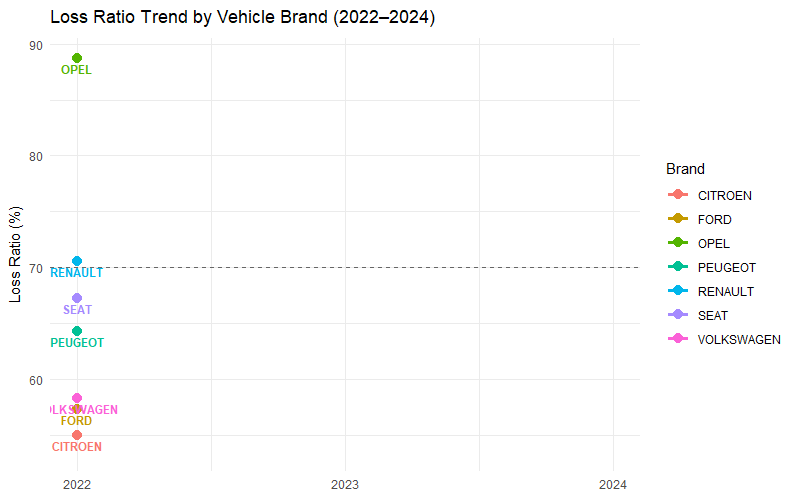

Unmasking Motor Insurance Risk Drivers
Take-home Ex01: Visual Analytics for Data Discovery
2026-05-24
Context & Objectives

Context:
Insurers often carry underperforming portfolios with unknown root causes of poor profitability and high volatility.
Traditional visual analytics in insurance is limited to dashboard reporting, lacking advanced analytical capabilities beyond tools like Tableau and Power BI.
Objectives:
Apply univariate visual analytics to explore distributions of numerical, categorical, and temporal variables.
Apply bivariate visual analytics to identify and validate key factors influencing profitability and volatility of the motor insurance portfolio.
Insight 4: Optional Coverage Pricing Mismatch


Safe (well priced):
Property Damage: Most balanced coverage. Both violins are wide and well spread, showing effective risk segmentation in pricing that matches actual claim variation.
Liability: Mature pricing with a broad, full bodied premium violin showing good differentiation. Incurred violin is also wide with a long right tail, reflecting inherently high bodily injury severity.
Legal Protection: Only optional coverage adequately priced. Both violins are compact and narrow, meaning low variation on both sides and proportional shapes.
Risky (underpriced):
Fire: Most critical. Premium violin is flat and concentrated near zero, while incurred violin is the widest in the entire chart, showing highly unpredictable expensive claims against nearly no pricing.
Occupants: Premium violin is the narrowest (no risk differentiation at all), yet incurred violin is broad and boxy, suggesting wide variation in claim severity.
Glass: Incurred violin has a distinctive diamond/star shape tightly clustered around a fixed cost, suggesting standardized repairs. Premium violin is thin and low, still too small to cover them.
Theft: Premium violin is wide and spread showing some differentiation, but incurred violin is a compact rectangle in a predictable band. The shapes do not match, pricing variation is misaligned with actual claim patterns.
Overall: Mandatory coverages have wide, full bodied violins on both sides, confirming mature pricing. Optional coverages have flat/narrow premium violins against much larger and varied incurred violins, confirming systematic underpricing.
Insight 6: Temporal Analysis by Year

Average incurred rose steadily from ~187 to ~224, signaling growing claims severity year over year.
Average premium peaked in 2023 then declined, suggesting premium cuts to attract new business while claims costs kept rising.
Loss ratio jumped from ~66.5% to ~75%, with the sharpest spike in 2024 (~8 percentage points in one year).
=> Warning: Rising claims, declining premiums, and worsening loss ratio indicate accelerating financial stress. Heavy new business acquisition without adequate premium adjustment is an urgent risk requiring immediate repricing action.

- Across three year window, RENAULT and PEUGEOT are the most stable, staying in the 63 to 68% range. They are the safest brands in the portfolio and should be prioritized for customer retention.
- OPEL continues to show warning to be the highest volatile brand. This instability suggests a small portfolio where a few large claims can swing the ratio wildly. Unpredictable and hard to price.
- SEAT is consistently the worst among mid range brands, hovering around 70 to 80% across all three years. It never dips below the benchmark, confirming it is structurally underpriced.